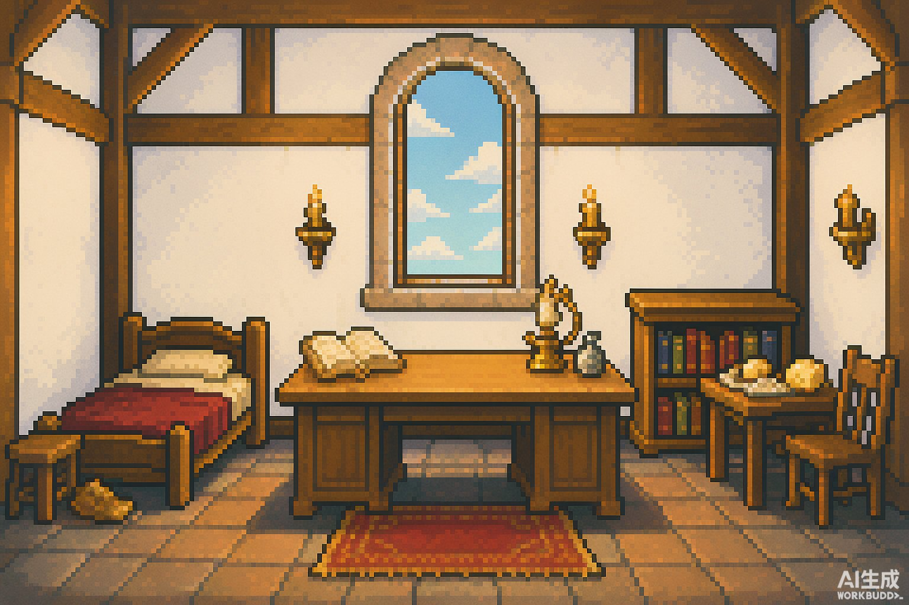
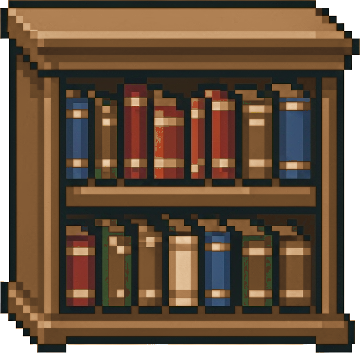
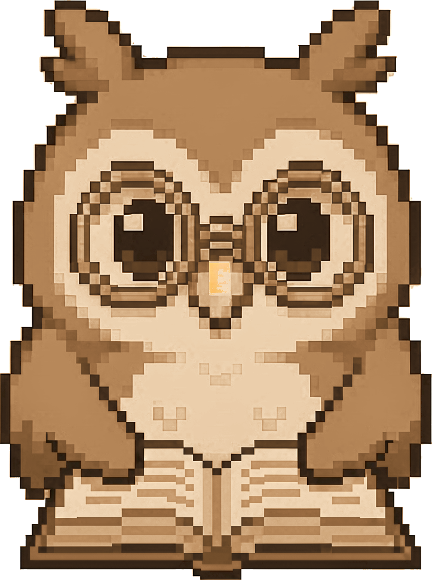

一起学习
未开始
25:00专注
写个计划，点「开始学习」，我们一起坐在这儿
还没写计划
点侧边「今日计划」写一条
🔔0 次提醒
⏱0 分专注
随时可以拖我 · 放到床 / 书柜 / 餐桌会换动作 · 点我一下会说话
今日计划
— 月 — 日星期—
0 / 0已完成
点文字 = 设为「正在做」 · 方框 = 完成 · ✕ = 擦掉
学习节奏
学一段、歇一段，自动循环。到点它会喊你。
一次学多久
新手从 25 分钟起，坐得住再往上加。
休息多久
休息时它下桌走动，你可以把它拖到房间任何角落。
背景音 呼嚕角落 · 环境音
开了就循环播放，学习时当背景白噪音；关掉完全不出声。
25:00
还没开始
还没写计划
监督
摄像头画面只在这台电脑上计算，不上传、不保存。
摄像头还没开
点右上角「开始学习」
点右上角「开始学习」
加载模型…
实时状态未开启
手机分–
AI 复核–
YOLO 检测–
三个小圆点：脸在不在 / 视线偏不偏 / 有没有手机。只有「手机在手上」和「人不在」会敲木鱼。
手机分是模型给「画面里有手机」的打分，≥0.38 才算看到。整帧认不出时会自动把画面中下部放大再认一次，读数后标「裁剪」就是这个来源。
YOLO 检测是开源 YOLO11n 模型（离线跑在本机）。整帧不确定时会裁手部区域放大再认一次，读数后标「裁剪放大」。这路最擅长找出小目标手机。
提醒音色
云扬（沉稳男声）/ 云夏（可爱童声）/ 云希（阳光男声）三套离线配音，固定台词不用联网；在这里换音色即时生效，设置里也同步。
校准姿势
第一次用先校准：坐正 → 低头 → 转头，各 3 秒。之后判断才准。
没摄像头也能看效果
三盏灯：绿 = 正常 · 黄 = 有点偏 · 红 = 已经在敲木鱼了